地政学
ウィーンはドナウ川と中央ヨーロッパの交差点にあり、旧帝国圏、バルカン、東欧、西欧を結びます。中立国の首都として国際機関を集め、外交、難民、エネルギー、安全保障を議論する舞台にもなる街です。境界も残ります。

🇦🇹 オーストリア / 中央ヨーロッパ / World City Atlas
帝国の首都だった記憶を抱えながら、国際機関、音楽、医療、研究、社会住宅、移民の生活が重なるオーストリアの首都です。旧市街の優雅さだけでなく、公共政策と日常の厚みから読む都市です。
都市の骨格
ウィーンは旧市街、リング通り、宮殿、ドナウ川、社会住宅、国際機関地区が近い距離で並びます。観光の都市である前に、中央ヨーロッパの政治記憶、福祉、交通、移民の生活を読む首都です。
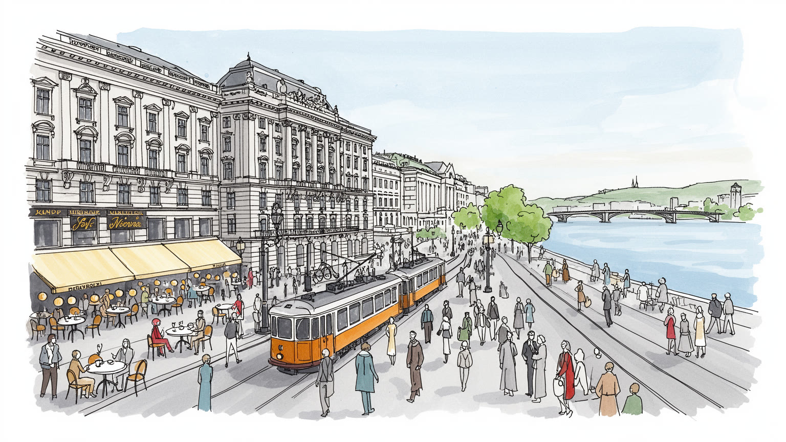
ウィーンはドナウ川と中央ヨーロッパの交差点にあり、旧帝国圏、バルカン、東欧、西欧を結びます。中立国の首都として国際機関を集め、外交、難民、エネルギー、安全保障を議論する舞台にもなる街です。境界も残ります。
観光、国際機関、金融、医療、大学研究、文化産業、公務が雇用を支えます。舞台やホテルの華やかさの裏では、介護、清掃、交通、飲食、建設、移民労働が日常を動かし、賃金と住宅が課題です。技能職も今も厚い都市です。
カトリック儀礼、ユダヤ史、イスラム系移民、正教会、世俗文化が重なります。音楽と美術は都市の名声を作りますが、追悼、教育、移民の祈り、サッカー観戦、夜の小劇場も街角の文化を伝えます。声も夜に響きます。
旅行者は宮殿、音楽、美術館、カフェを巡りますが、住民は路面電車、社会住宅、公園、市場、学校、医療を使って暮らします。観光都市でありながら、生活を支える公共性が評価を高めています。買い物も近いです。
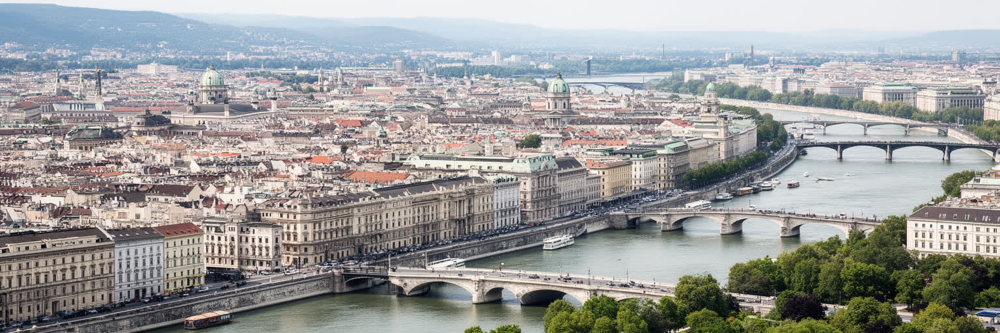
ウィーンの地理は、旧市街を囲むリング通り、ドナウ川、宮殿、公園、郊外住宅地の重なりとして読めます。中世の城壁跡に生まれたリング通りは、帝国の官庁、劇場、大学、美術館、議会、市庁舎を並べ、国家の威信を歩いて見せる都市装置になりました。ドナウ川は中心から少し離れて流れ、洪水対策と河川改修によって運河、島、河岸の余暇空間を作ってきました。中心のシュテファン大聖堂からホーフブルク、国立歌劇場、美術史美術館へ向かう短い距離には、宗教、王権、文化、観光が密集します。一方、都市の生活圏は地下鉄、路面電車、バスで外側へ伸び、旧帝都の華やかさだけでは説明できない住宅地、市場、学校、公園を抱えます。ウィーンを読むには、宮殿の正面だけでなく、川の治水、環状道路の象徴性、郊外から中心へ向かう通勤の動きを重ねる必要があります。帝国の首都だった地理は、現在も行政、観光、文化資本の配置を左右し、同時に住民の日常の移動を形づくっています。丘陵に近い西側、ドナウを越えた新しい開発地、中心を横切る運河の風景は、都市が一枚の古都ではなく、治水と拡張を続ける首都であることを示します。空港や鉄道駅は中央ヨーロッパの近隣都市と結び、週末旅行、通勤、物流、外交移動を支えます。古い都心と広域交通が近接するため、ウィーンは静かな古都でありながら、地域を束ねる実務的な結節点でもあります。
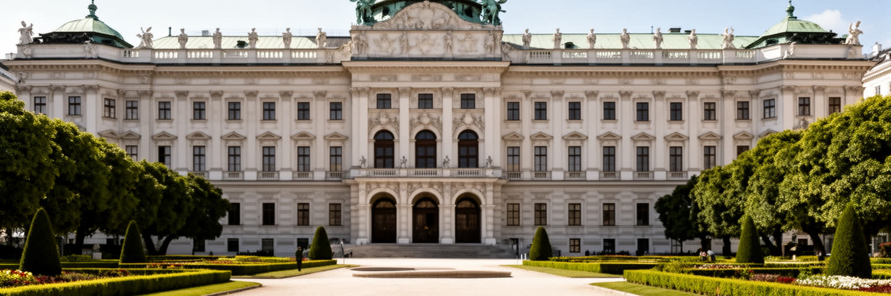
ウィーンはハプスブルク帝国の首都として、中央ヨーロッパの多民族支配、官僚制、宮廷文化、軍事、婚姻外交の記憶を抱えます。ホーフブルクやシェーンブルン宮殿は観光名所であると同時に、皇帝の権力がどのように儀礼、建築、庭園、収集品によって演出されたかを示す場所です。帝国はドイツ語圏だけでなく、チェコ、ハンガリー、ポーランド、クロアチア、スロベニア、ルーマニア、ウクライナ、イタリア北部など多様な地域を含み、その記憶は食、姓、音楽、軍服、官庁建築、墓地に残ります。華麗な展示は支配の秩序を美しく見せますが、民族運動、戦争、貧困、反ユダヤ主義、帝国崩壊の痛みも同時に考えなければなりません。ウィーンの帝国記憶は、ノスタルジーだけではなく、ヨーロッパの境界、少数者の扱い、国家の多様性を考える入口になります。観光客が宮殿を歩くとき、装飾の豊かさと、そこに組み込まれた多くの地域の労働、税、兵役、忠誠の歴史を同時に読むことが、この都市への誠実な近づき方です。帝国崩壊後の小国オーストリアにとって、巨大な宮殿群は誇りであると同時に、過大な過去との距離を測る装置にもなりました。保存された部屋の静けさは、失われた領土と住民の記憶を今も呼び戻します。宮廷の物語に少数民族や下働きの視点を足すほど、帝国の記憶は観光用の華麗な絵から、複雑な社会史へ変わります。
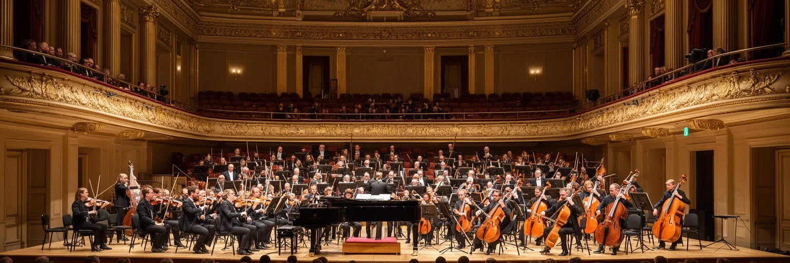
ウィーンの音楽文化は、作曲家の名前を並べるだけでは足りません。宮廷、教会、貴族のサロン、市民ホール、劇場、音楽学校、出版社、楽器職人、合唱団、舞踏会、公共放送ORFが長く結びつき、音楽を都市の制度として育ててきました。モーツァルト、ベートーヴェン、シューベルト、ヨハン・シュトラウス、マーラー、シェーンベルクらの記憶は観光資源になっていますが、実際の音楽都市は演奏家、舞台技術者、教師、学生、清掃、衣装、チケット窓口、聴衆の習慣に支えられます。国立歌劇場や楽友協会の格式は強い一方、現代音楽、クラブ、移民コミュニティの音、教会音楽、学校の演奏も都市の現在を作ります。音楽はウィーンを優雅に見せますが、席の価格、教育機会、文化予算、観光客向けの消費との距離も問われます。名曲の記念碑を巡るだけでなく、練習室、地下鉄で楽器を持つ学生、劇場の夜勤、夜更けの小劇場まで見ると、文化が労働と公共支援によって保たれていることが分かります。ウィーンの音は、帝国の名残と市民社会の努力が重なって続いています。観光客向けの軽い演奏会と、地域の合唱や音楽学校の地道な稽古は同じ都市にあります。誰が舞台に立ち、誰が客席に座れるかを考えると、音楽都市の社会的な輪郭も見えてきます。さらに、音楽は国籍や言語を越える一方、専門教育へ入る費用や人脈の差も映します。名声を保つには、才能を都市に残す住まいと練習場所も必要です。
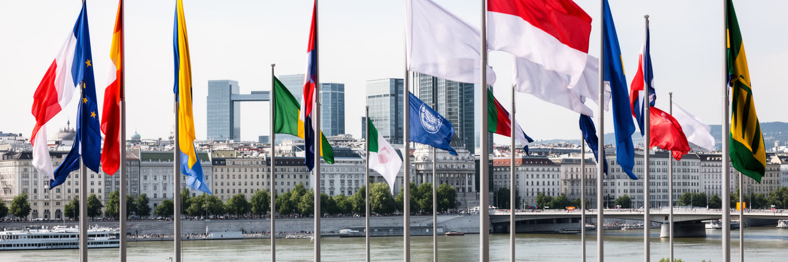
ウィーンはオーストリアの首都であり、連邦政府、議会、省庁、憲法裁判所、政党、報道機関が集まる政治都市です。同時に、中立国の首都として、国連機関、国際原子力機関、工業開発、薬物犯罪対策、欧州安全保障協力の外交機能などを受け入れています。冷戦期に東西の間に位置した地理と政治姿勢は、会議、交渉、査察、専門家ネットワークを集める土台になりました。ドナウ沿いのウィーン国際センター周辺は、旧市街の宮廷的な景観とは異なり、戦後の国際秩序を象徴する行政都市の顔を持ちます。外交都市としてのウィーンは、華やかな舞踏会や観光の印象の裏で、核不拡散、難民、エネルギー、安全保障、犯罪対策、開発の実務が議論される場所です。国際機関は高度な専門職と通訳、警備、清掃、交通、ホテル、会議サービスの雇用を生みますが、都市の住民全体にその利益がどう届くかは別の問いになります。英語を使う国際職員と地元住民、移民労働者、学生が同じ都市を使うことで、ウィーンは小さな首都以上の国際性を持ちます。中立と対話のイメージは強いですが、世界の紛争や制裁、エネルギー問題が会議室を通じて街へ持ち込まれます。地方政治、難民受け入れ、エネルギー価格、住宅政策も外交都市の足元で議論され、市民から見れば、遠い世界政治が地下鉄の車内や学校の多言語環境に日々現れることもあります。
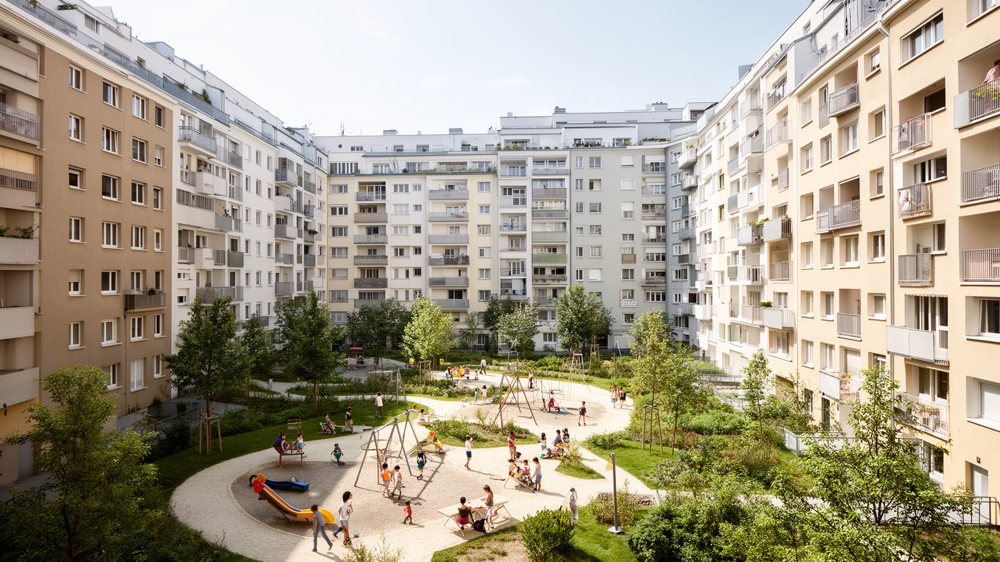
ウィーンが生活しやすい都市として語られる大きな理由に、長い社会住宅政策があります。第一次世界大戦後の「赤いウィーン」以来、市は労働者向け住宅、共同浴場、保育、図書館、中庭、診療、文化施設を結びつけ、住宅を単なる市場商品ではなく都市の社会基盤として扱ってきました。カール・マルクス・ホーフのような大規模住宅は政治的象徴であると同時に、住民が日々使う家、廊下、中庭、洗濯室、駅への道です。現在も市営住宅や補助付き住宅は、家賃上昇を抑え、中間層と低所得層を都市内に残す役割を持ちます。ただし、入居条件、待機、移民家庭のアクセス、建物の老朽化、エネルギー改修、郊外化の圧力は課題です。住宅政策の強さは、観光都市の中心が空洞化しすぎないための防波堤にもなります。高級ホテルや短期賃貸が増える都市で、誰が学校や職場の近くに住めるかは都市の公平性を決めます。ウィーンの社会住宅を見ることは、建築様式を見ることではなく、住まいを通じて都市の時間、階級、福祉、政治を読むことです。家賃を抑える制度があるからこそ、音楽家、介護職、学生、公務員、移民家族が同じ都市に残りやすいです。中庭や共有施設は、住民を管理する空間ではなく、子ども、高齢者、単身者が互いの存在を知る場所にもなります。住宅政策が弱まれば、文化都市を支える働き手ほど中心から押し出されます。
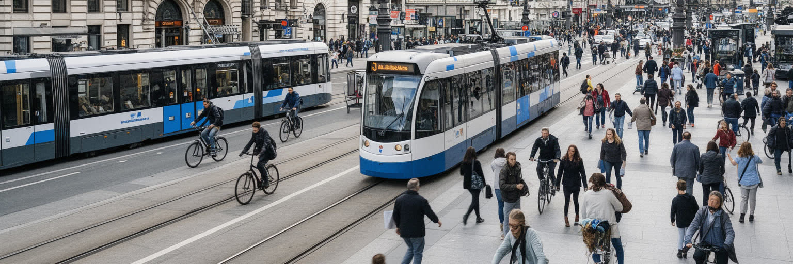
ウィーンの日常を支えるのは、地下鉄、路面電車、バス、近郊鉄道が細かくつながる公共交通です。旧市街の徒歩圏、リング通りの路面電車、外側の住宅地へ伸びる地下鉄、ドナウを越える橋、空港連絡が、観光と通勤を同じネットワークに乗せます。公共交通の評価が高いのは、単に車両が多いからではなく、運賃政策、乗り換えの分かりやすさ、歩行者空間、公園、社会住宅の配置と結びついているからです。車に依存しすぎない都市設計は、学生、高齢者、子ども、低所得者、旅行者にとって移動の自由を広げます。一方、郊外の成長、夜間勤務、バリアフリー、観光混雑、暑さ対策、自転車と歩行者の共存は、今も調整を必要とします。交通は美しい旧市街を見せるためだけの装置ではなく、誰が職場、学校、病院、公園、劇場へ行けるかを決める社会政策です。ウィーンでは、駅前の広場、住宅地の停留所、路面電車の窓から見える街路樹が生活の質を作ります。都市の魅力は宮殿の写真だけでは測れません。毎日の移動が安く、読めて、待てて、座れることが、住民にとっての豊かさになります。公共交通はウィーンの公共性を最も具体的に経験させる制度です。停留所の近くに保育園、診療所、スーパーがあることは、観光地図には出にくいが生活の決定的な条件です。短い乗り換えで日常を済ませられる都市は、時間の不平等を小さくできます。
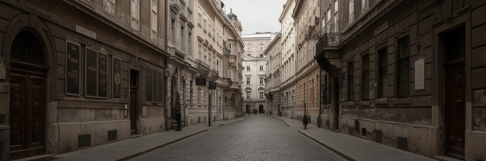
ウィーンの多文化性は、帝国の多民族性、ユダヤ人共同体、戦後移民、難民、東欧やバルカンからの移動が重なってできています。十九世紀末から二十世紀初頭のユダヤ系市民は、医療、法律、文学、音楽、学術、ジャーナリズムに大きな役割を果たしましたが、反ユダヤ主義とナチスによる迫害は共同体を破壊しました。現在の記念碑、博物館、躓きの石、追悼式は、失われた生活と加害の歴史を都市の地面へ戻す試みです。同時に、今日のウィーンにはトルコ系、旧ユーゴスラビア系、シリア、アフガニスタン、ウクライナなど多様な背景を持つ住民が暮らし、学校、職場、宗教施設、市場、病院で都市を作っています。移民文化は料理や祭りの彩りではなく、介護、建設、交通、清掃、飲食、学術、起業を支える生活の現実です。言語支援、差別、住居、教育機会、宗教の可視性は、都市の公平性を測る課題になります。ウィーンを読むには、宮廷の栄光だけでなく、失われたユダヤ人の生活、移民家庭の現在、排外主義への警戒を同じ地図に置く必要があります。記憶と共生は別々のテーマではなく、誰を都市の一員として扱うかという同じ問いで結びついています。墓地、記念板、学校の授業、市場の多言語表示は、過去と現在が抽象論ではなく街角に現れることを教えます。追悼が制度だけで終わらず、差別に抗する日常の態度へつながるかが重要です。
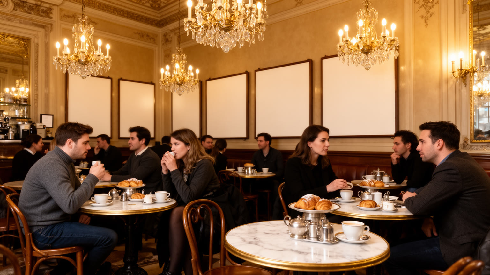
ウィーンのカフェは、観光客がケーキを食べる場所である前に、新聞、読書、議論、待ち合わせ、仕事の休憩、孤独を受け止める都市の居間でした。十九世紀末から二十世紀初頭には、作家、建築家、ジャーナリスト、政治家、学生、亡命者がカフェで新聞を読み、都市の言論や文化を形づくりました。今日のカフェ文化は歴史的な内装や接客作法として保存される一方、家賃上昇、観光化、チェーン店、労働条件の変化にさらされています。旧市街の有名店だけを見れば優雅な時間に見えますが、生活のウィーンにはナッシュマルクト、ブルネンマルクト、パン屋、移民料理店、学生の食堂、職場近くの小さな店も含まれます。カフェは世代や階層をゆるく混ぜる場所になり得ますが、価格や雰囲気によって排除も生みます。長く座る権利、新聞をめくる時間、隣席の会話、給仕の仕事の尊重は、都市の公共性に近い感覚を作ります。ウィーンの日常を読むには、宮殿の豪華さと同じくらい、誰がどこで休めるのかを見る必要があります。カフェ文化は、消費の形式でありながら、都市が人に余白を与えられるかを測る小さな尺度でもあります。朝の市場で買物をし、昼にソーセージスタンドで食べ、夕方に友人と一杯飲む時間も、同じ都市の生活文化です。コーヒーの香り、揚げ物の匂い、路面電車のベルが、観光名所では測れない都市の速度を少し緩めます。
ウィーンの気候は内陸的な寒暖差を持ち、冬は冷え、夏は暑さと乾燥を感じやすいです。ドナウ川、ドナウ島、プラーター、ウィーンの森、街路樹、公園、共同住宅の中庭は、都市の暑さを和らげ、散歩、運動、子どもの遊び、休息の場所になります。RapidやAustria Wienの応援へ向かう人、ドナウ島を走る人、プラーターで遊ぶ家族も、緑地を日常の舞台として使います。気候変動で熱波が強まるほど、日陰、水辺、断熱、涼しい公共施設、緑地へのアクセスは福祉政策に近づきます。中心部の石畳や歴史的建物は美しいですが、夏の熱をためやすく、観光客、高齢者、屋外労働者に負担をかけます。古い住宅では冬の暖房費や断熱改修も課題であり、気候対策は景観保護と生活費の問題を同時に扱う必要があります。ドナウの治水空間は洪水対策であると同時に、都市の大きな余白でもあります。ウィーンを緑と気候から読むには、公園の美しさだけでなく、低所得地区の木陰、学校の暑さ、路面電車の停留所、社会住宅の改修、雨水管理を同じ政策として見ることが重要です。緑は都市の飾りではなく、健康、孤立予防、気候適応を支える基盤です。涼める場所が近くにあるかどうかは、住民の暮らしやすさを左右します。街路の小さな木陰や水飲み場も、猛暑の日には大きな公共資産になります。
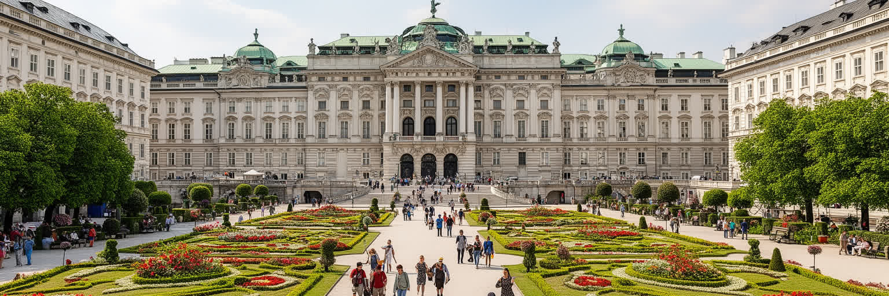
ウィーン観光の強さは、旧市街、シェーンブルン宮殿、美術館、歌劇場、教会、庭園、カフェが短い移動で結ばれている点にあります。旅行者は帝国の優雅さ、音楽、菓子、馬車、舞踏会のイメージを楽しみますが、遺産は美しい背景だけではありません。建物の保存、観光バス、ホテル、短期賃貸、土産物店、混雑、住民の買物環境は、生活と観光の距離を常に調整します。旧市街の石畳や歴史的外観は都市の魅力である一方、バリアフリー、暑さ、商業化、地元の小売の維持には工夫が必要です。美術館や宮殿の展示は、帝国の収集、戦争、略奪、ユダヤ人財産の問題とも関係し、来訪者に歴史の複雑さを考えさせます。観光が都市を支えるほど、そこで働く人の賃金、清掃、警備、交通、文化施設の労働も見えなければなりません。ウィーンは遺産を保存する都市であると同時に、遺産を日常の中で使い続ける都市です。名所を巡るとき、門や天井の豪華さだけでなく、住民がその周辺で学校へ行き、買物をし、電車に乗る姿を見ることで、観光都市の本当の厚みが見えてきます。観光収入は文化財の維持に役立ちますが、中心部が記念写真だけの空間になれば、都市の生活感は薄れます。遺産を守るとは、建物を残すだけでなく、周囲で普通に暮らせる条件を守ることでもあります。混雑の分散、公共交通の案内、地元商店の維持は、観光客にも住民にも必要な都市管理です。
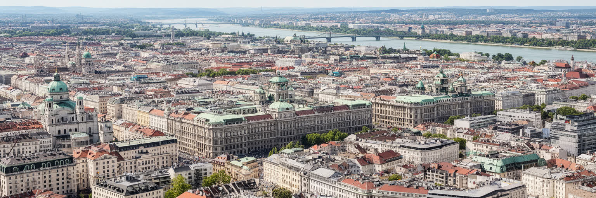
ウィーンを読む面白さは、帝国の都としての記憶と、生活都市としての公共性が同じ街路に重なる点にあります。旧市街や宮殿はハプスブルクの威信を今に伝え、音楽と美術は都市の名声を世界へ広げます。しかし、ウィーンの価値は観光的な優雅さだけではありません。社会住宅、公共交通、医療、大学、国際機関、移民の商店、ユダヤ記憶の追悼、地区市場、公園が、都市を住み続けられる場所にしています。過去の多民族帝国は、現在の多文化都市を自動的に保証するものではなく、差別や排外主義、記憶の忘却にどう向き合うかが問われます。国際機関の会議場では世界の危機が議論され、劇場では伝統が上演され、社会住宅の中庭では子どもが遊びます。これらを別々に見ないことが、ウィーンを平板な美しい古都にしないために重要です。豊かな文化資本を持つ都市が、住民の生活費、移民の機会、労働条件、観光の圧力をどう調整するかは、世界の多くの歴史都市に共通する課題です。ウィーンは完成した博物館ではなく、記憶を抱えながら公共制度で日常を支える都市として読むべき場所です。宮殿の広場から社会住宅の中庭へ、歌劇場から移民の市場へ、国際機関地区からユダヤ記念碑へ移動すると、都市の評価軸が美しさだけでは足りないことが分かります。過去を展示しながら現在の生活を守る力こそ、ウィーンの核心です。